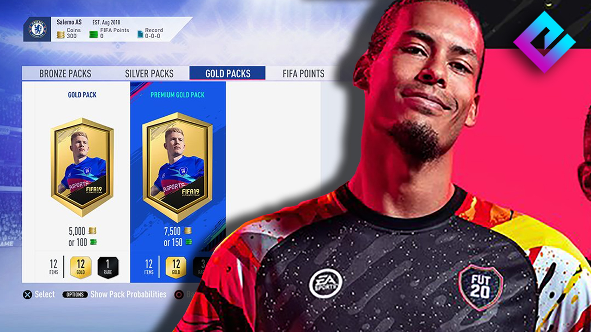

A lógica de probabilidade e "sorte" em Loot Boxes e sistemas Gacha.
Este site apresenta a investigação da funcionalidade: Abrir Loot Box / Rodar Gacha . Foco em probabilidade, fluxograma, banco de dados e impactos psicológicos.
Exemplo de Jogos
Fluxograma

O Modelo de Dados (Conceitual)

Resumo Textual
Os jogos com loot boxes são sistemas em que o jogador pode adquirir itens, personagens ou skins, dependendo da proposta do jogo. Essas caixas são geralmente compradas com moedas virtuais, moedas do próprio jogo ou dinheiro real. A mecânica funciona com base na “sorte”, ou seja, em uma randomização numérica. Por exemplo: uma chance de 1/100 significa 1% de possibilidade de conseguir determinado item ou personagem. Essa aleatoriedade é conhecida como RNG (Random Number Generator).
O problema surge quando muitos jogos passam a exigir dinheiro real para tornar a experiência mais “fácil” ou “divertida”. Esse incentivo é reforçado pela mecânica de pity, que garante ao jogador um item raro após certo número de tentativas. O pity explora a sensação de estar “perto, mas ainda longe”, levando o jogador a continuar gastando para finalmente alcançar a recompensa desejada. Apesar de parecerem mecânicas simples ou até infantis, esses sistemas podem deixar algumas pessoas viciadas. Isso acontece pelo desejo de completar coleções, pela frustração de não conseguir o item desejado ou pela expectativa constante de “talvez conseguir na próxima tentativa”. Além disso, os desenvolvedores costumam criar eventos temporários, com itens ou personagens exclusivos que deixam de estar disponíveis após o fim do evento. Esses eventos pressionam o jogador a tentar obter tudo rapidamente, o que pode aumentar ainda mais o gasto impulsivo em sistemas gacha.Sobre Nós
Arthur da Silva Veeck
arthur.silva.veeck@gmail.com
GitHub /
Linkedin
Henrique Ibarra Ortiz Urbano
henriqueortiz3090@gmail.com
GitHub /
Linkedin